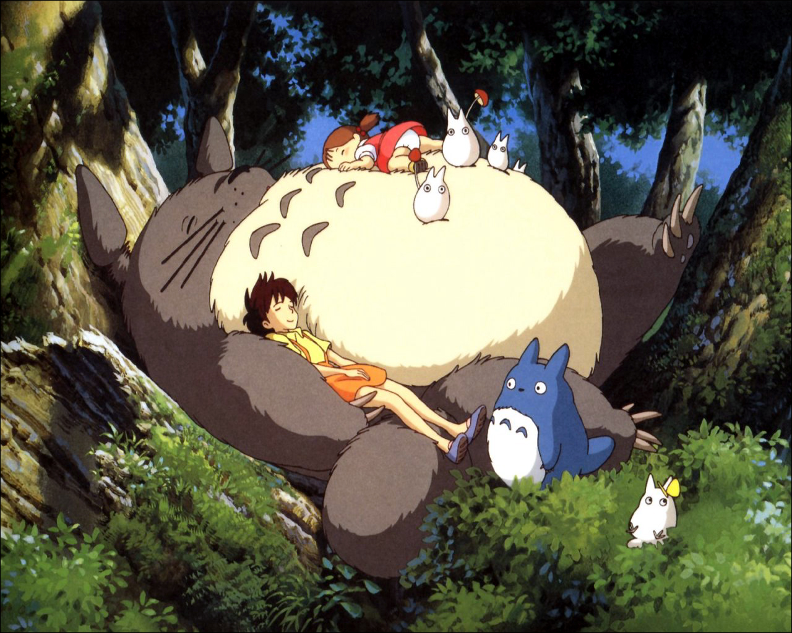
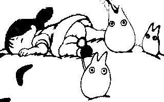
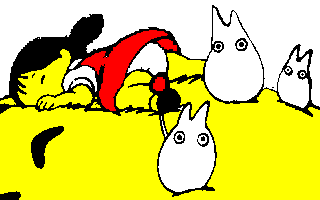
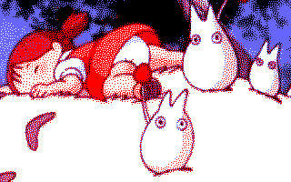

Here are some pictures of various steps of work on some of our published work. This will help you see what methods we used to do such great things!
This picture was presented at Ze Meeting 2006 and was published in PulkoMandy's Music Disk, as a cheatpart. It was converted from this PC wallpaper :
Most of the work on this picture was done on PC using the GIMP. The first step was to saturate the picture, and do a contour detection, playing with various parameters until I got a clear outline.
Note that only a small part of the original pictre was used, and no resizing was done. If you resize the picture down, you will probably have trouble rendering all the details on the CPC. If you scale it up, you will have to clean up big pixels, jpeg artifacts, or interpolation added by the tool you used.
Don't hesitate to wildly alter the picture when doing a transfer, you can always look at the original if you need it. You can't keep all the details when doing the transfer, so, it's better to keep only the main idea of the picture and redraw the little details.
The next step is to choose the colors you will use. This is a mode 1 transfer so we have only 4 colors available. At the beginning I tried some mixes of yellow and red, but actually I needed red for the dress and pink for the skin, so I ended up with a monochrome palette.
The last step was to add sieves. I used them heavily to get some more colors, and also to create some levels of shades. I also cleaned up the original outlines to make them smoother, and did some other little changes to the picture just to make it look better.
This last image is what you get if you try to convert the picture directly to 4 colors with traditional methods. There are lot of pixels everywhere, and you will spend a lot of time cleaning them up and replacing them with clean sieves. So it's probably simpler to remove them fronm the beginning.
This one entered the gfx ocntest at Amstrad Expo 2010. Again, it is a conversion from a picture found in Pouët's Random Image Thread (so yes, that was usefull... sometimes...)
Well, before we start, here's the original image.

As you can see, it was heavily cropped to CPC screen dimensions, and even more (it's a vertical 16K screen, it could be twice larger). As usual, resizing the image to CPC resolution would have forced me to remove a lot of details. So I went for a version with no resizing, and selected a part of the picture that still made sense on it's own.


I did some attempts at color reduction with scolorq, with and witohut cropping. The problem is the result is rather monochrome with this picture. This does not give something very interesting to work with. So I went for the same technique as for the Music Disk image, edge detection filters. I expected it to give less good results on a photography, but it actually worked quite well.
Then, some time was spent playing with colors and touching up the pixels around. In the end, the result looks quite far from the original, but that's not a problem.
{% include_relative footer.html %}